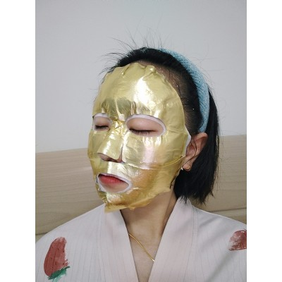

MuQi Solid-State Hydrogen Eye Patch

Modern eyes endure multiple pressures — screens, late nights, dryness. Traditional eye patches offer temporary relief but fail to address deep oxidative damage. MuQi Technology introduces the Hydrogen Eye Patch with solid-state hydrogen technology, allowing every inch of eye skin to be gently healed by the microscopic power of hydrogen molecules.
现代眼睛承受着屏幕、熬夜、干燥的多重压力。传统眼贴只能缓解表面，无法解决深层氧化损伤。木齐科技推出固态氢眼贴，让每一寸眼周肌肤都能被氢分子的微观力量温和治愈。Technology Highlights
HI Hydrogen Embedding Technology
Solid-state hydrogen (HI) is embedded into fibers via ion plating, releasing high-purity hydrogen upon contact with water. Hydrogen concentration reaches 0.1–0.5 L/h (3× safer than national standards), with 92.3% penetration efficiency to the dermis (Fudan Lab data).
通过离子镀工艺将固态氢素嵌入眼贴纤维，遇水后持续释放高纯度氢气，穿透效率直达真皮层 92.3%。Medical-Grade Carrier Matrix
Electrospun membrane (>95% porosity) combined with hyaluronic acid and ceramides enables dual-action care: hydrogen antioxidant + active ingredient repair. Clinical tests show significant results in 4 weeks.
静电纺丝膜布（孔隙率＞95%）搭配透明质酸和神经酰胺，实现氢分子抗氧化与活性成分修复的双通道协同。Core Benefits
- 🧬 Antioxidant & Anti-Aging — Free radical scavenging with 9.52 antioxidant index. Delays periorbital aging at the cellular level.
清除自由基，延缓眼周老化，抗氧指数高达 9.52 - 🩹 Post-Phototherapy Recovery — 89% erythema resolution in 24 hours. 9.4/10 patient satisfaction score.
24小时红斑消退率 89%，满意度 9.4/10 - ⚡ Daily Rescue — Relieves dryness, dark circles, and puffiness. Ideal for late-night workers and heavy screen users.
缓解干涩、黑眼圈、浮肿，适配熬夜党、屏幕族
FAQ
How does the hydrogen eye patch work?
The patch uses MuQi's patented HI Hydrogen Embedding Technology — solid-state hydrogen is embedded into the fiber matrix via ion plating. When in contact with moisture from the skin, it releases molecular hydrogen (H₂) continuously for hours.
Is it safe for sensitive skin?
Yes. The hydrogen concentration (0.1-0.5 L/h) operates at 3× below national safety thresholds. The medical-grade carrier matrix is hypoallergenic and dermatologist-tested.
How long until I see results?
Clinical data shows 18.7% elasticity improvement and 23.4% wrinkle reduction after 4 weeks of regular use. Many users report reduced puffiness and brighter under-eye area within the first week.
Contact us for OEM/ODM partnerships, bulk orders, or technical inquiries.
Inquire Now →